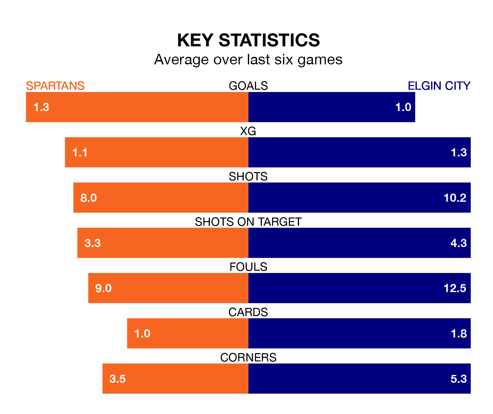

Spartans host Elgin City in Saturday's match at the Ainslie Park Stadium looking to bounce back from defeat last time out in League Two.
The Spartans, who sit third in the league after 21 games, fell to a 1-0 away defeat to Forfar Athletic on February 3.
They face an Elgin side who also lost their last match, a 2-0 defeat to Bonnyrigg Rose Athletic, and who sit eighth in the table.
With 19 goals in 23 games so far this season, Elgin are the league's lowest scorers with 0.8 goals per game. And they are conceding more than average, letting in 40 goals at a rate of 1.7 per game.
Spartans, meanwhile, are above average scorers, with 1.7 goals per game, compared to a league average of 1.3. They have conceded 1.1 goals per game.
In Blair Henderson, the Spartans have one of the league's most on-form strikers so far this season. He has notched 12 goals in 21 appearances, to sit second in the scoring charts.
His goal rate of one every 154 minutes is much quicker than that of Russell Dingwall, City's top scorer with a goal every 386 minutes, and a total of four goals in 18 games.
Over the last two years, Spartans and Elgin have played each other twice. Spartans won both of them.
Their last meeting was on December 16, when Spartans won 4-0 away.
The hosts are in mixed form in League Two, with three wins and a draw from their last six games.
With three wins and three losses over that period, the Black & Whites' form is slightly worse – they have taken nine points from 18, compared to Spartans's 10.
Updated: 11:43 (UTC), 08/02/24